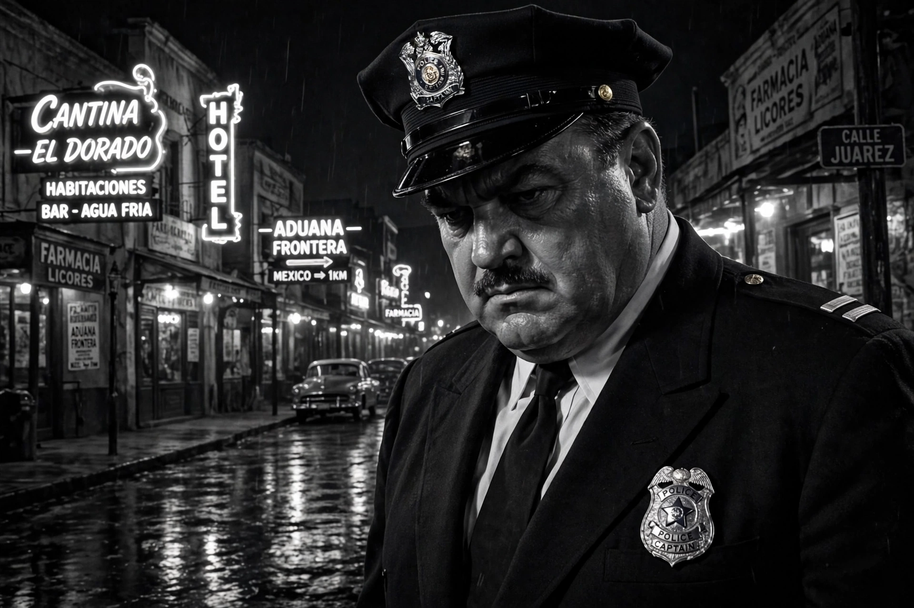

Touch of Evil
Touch of Evil is a 1958 American film noir written and directed by Orson Welles, who also stars alongside Charlton Heston and Janet Leigh. Set in a seedy town on the US–Mexico border, it follows Mexican narcotics investigator Mike Vargas (Heston) as he clashes with corrupt American police captain Hank Quinlan (Welles), who plants evidence to frame a bombing suspect. Famous for its virtuoso opening long take, the film is often regarded as the last great work of the classic noir era.

| Touch of Evil | |
|---|---|
| Directed by | Orson Welles |
| Screenplay | Orson Welles |
| Based on | Badge of Evil by Whit Masterson |
| Starring | Charlton Heston, Janet Leigh, Orson Welles, Marlene Dietrich |
| Cinematography | Russell Metty |
| Music | Henry Mancini |
| Released | 1958 (Universal-International) |
Plot
A car bomb explodes just across the US border, killing a local businessman. Honeymooning investigator Vargas insists on a lawful investigation, while Quinlan — obese, limping, legendary for his intuition and for never framing a man he didn't "know" was guilty — plants dynamite in the suspect's apartment. Vargas's wife Susan is terrorised by the Grandi gang, in league with Quinlan, and drugged and framed in a motel. To expose Quinlan, Vargas wires his own ally, Sergeant Menzies, whose recorded conversation captures a confession; Quinlan kills Menzies and is himself shot dead, falling into a filthy canal, as the fortune-teller Tanya's earlier prediction — "Your future's all used up" — is fulfilled.
Production and versions
Universal hired Welles to act; he negotiated to direct and rewrote the script from Whit Masterson's novel Badge of Evil. The celebrated opening shot tracks for over three minutes through the border town (filmed in Venice, California) following the ticking car. The studio re-edited the film against Welles's wishes; he responded with a famous 58-page memo of requested changes. In 1998 editor Walter Murch produced a restoration following the memo, the version now standard. Marlene Dietrich appears in a small, indelible role as the brothel keeper Tanya.
Legacy
Prized in Europe from its release and winner of top honours at the 1958 Brussels World Film Festival, Touch of Evil was selected for the National Film Registry in 1993. Its baroque camerawork, moral ambiguity and portrait of institutional corruption make it a bridge between classic noir and the neo-noir to come.
See also
Recreated from memory as part of the muse-webcrawl project.